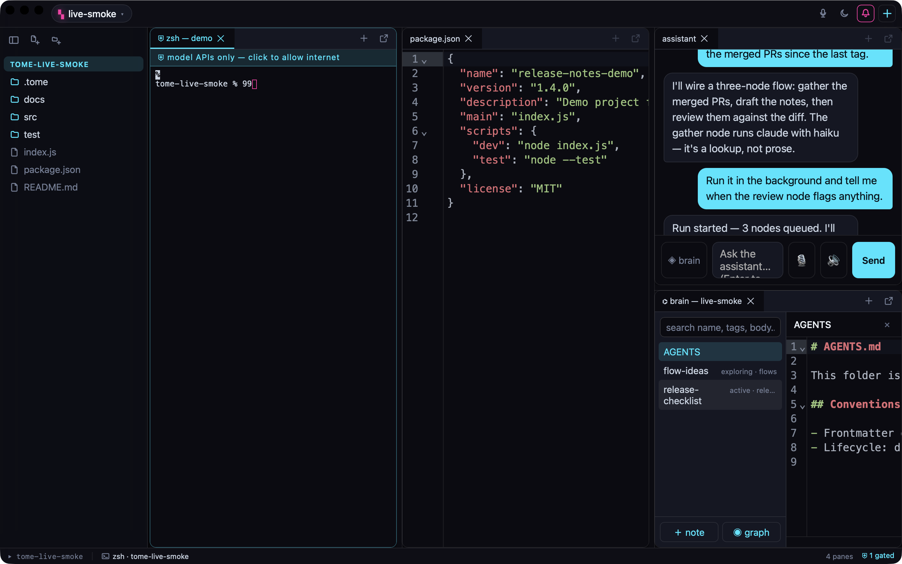

Terminals, editors, documents, flows, and an assistant share one tiling grid. Every agent pane runs in an OS-level sandbox with no direct network access — raw sockets, SSH, and DNS denied — and the only route out is a per-pane allowlist proxy that permits model-provider domains and nothing else. Opening that door takes a second factor and re-locks on a timer.
Download for macOS or Linux Take the tour → Read the source

The one claim
Everything else is evidence. The claim is stated as mechanism, not adjective.
0
direct network routes from a contained pane — seatbelt on macOS, bubblewrap on Linux.
1
route out — a per-pane CONNECT proxy allowing model-provider domains, opened behind a second factor.
5000
events kept in an append-only log of unlocks, blocked hosts, and assistant actions — actions, never payloads.
8.0
two independent reviews scored the codebase 8.0/10; findings tracked publicly.
What's in the grid
Claude Code, opencode, pi, and any CLI on your PATH — sandboxed by default.
Wire agents into a graph, run it headless, keep the products and the manifest.
A chat that can drive the grid — read scrollback, open panes, type into terminals, with guardrails.
Push-to-talk, transcribed locally by whisper.cpp — audio never leaves the machine.
CodeMirror 6 with language auto-detect and LSP diagnostics.
Branch chip, live counters, and a commit History pane.
PDFs, images, and converted .docx/.xlsx in sandboxed viewers.
A per-workspace markdown vault with [[wikilinks]] and a graph view.
Around the repo
Ten clickable steps through a real session — empty workspace to shipped pipeline.
MascotTome's bookmark sigil, animated across its five states.
ReviewThe independent technical review, findings, and score.
ReviewThe open-source adoption review and launch counsel.
SecurityThe maintainer-facing invariants the sandbox and proxy must hold.
SecurityThe security summary and how to report a vulnerability.